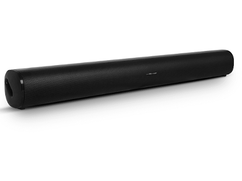

Barra de so SC300SND SCHNEIDER
| Tipus de dispositiu | Barra de so |
|---|---|
| Transmissió | Inalàmbrica i per fil |
| Subwoofer | No |
| Connectivitat | WiFi, AUX, Coaxial |
| Incorpora HDMI | No |
| Característiques especials | Cable d'àudio, comandament a distància |
| Color del producte | Negre |
| Contingut | Barra de so, cable jack 3.5mm, comandament a distància, manual d'usuari |
- Equipa la teva televisió amb aquesta barra de so 2.0 i gaudeix d'una gran qualitat de so
- Gràcies al seu disseny compacte s'adapta fàcilment a qualsevol espai
- Experimenta un so inmersiu, compacte i discret
- Connecta't inalàmbricament des de qualsevol dispositiu gràcies a la connexió Bluetooth